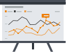

Sécuriser vos bases de données email est notre métier.
A l’heure où la protection des données personnelles est souvent pointée du doigt, TrackUp est la solution SaaS qui permet de surveiller de façon automatisée et en continu l’exploitation de vos bases emails.
L’équipe de TrackUp vous accompagne dans la phase de mise en œuvre.
Diagnostic & Audit
L’équipe de TrackUp identifie avec vous les bases de données à protéger. Un audit des bases est réalisé pour une meilleure répartition des pièges. Vous nous transmettez la liste des expéditeurs autorisés à communiquer.
Création & paramétrage
L’équipe de TrackUp définit le nombre de lots à créer et le nombre d’adresses pièges par lot. TrackUp créé ensuite des adresses pièges au profil réel (simulation comportementale). TrackUp ne dispose d’aucune limite en terme de volume et peut surveiller simultanément autant d’adresses pièges que nécessaire.
Certification juridique
L’équipe de TrackUp s’occupe de l’enregistrement et du dépôt des adresses pièges auprès d’un huissier de justice. Étape indispensable, en cas de détournement de données, pour une action judiciaire efficace.
Injection
Insertion ponctuelle ou en continu via API dans les bases à protéger.

Reporting de suivi
Recevez de façon régulière dans votre boîte emails un reporting de suivi automatisé comportant des indicateurs pertinents : expéditeur, objet du message, visuel du message, nombre de campagnes reçues, nombre d’emailings reçus, etc.
Alerte
Recevez un email d’alerte déclenchée en temps réel dès la 1ère anomalie détectée par TrackUp. Nous vous faisons parvenir les éléments de preuves certifiées pour une action judiciaire efficace.
VOUS SOUHAITEZ UNE PRÉSENTATION ?